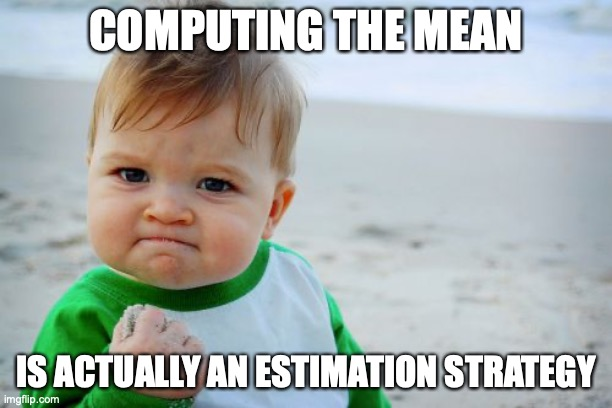
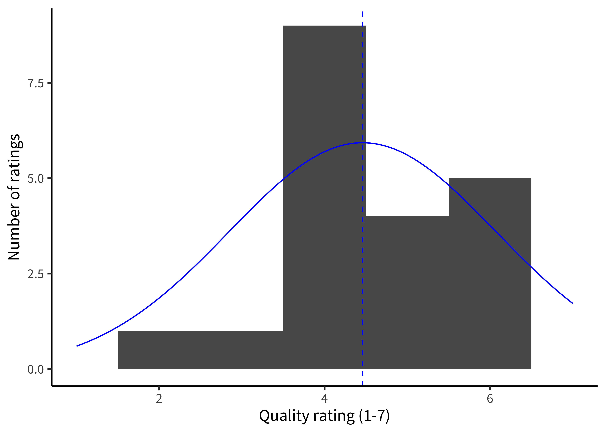
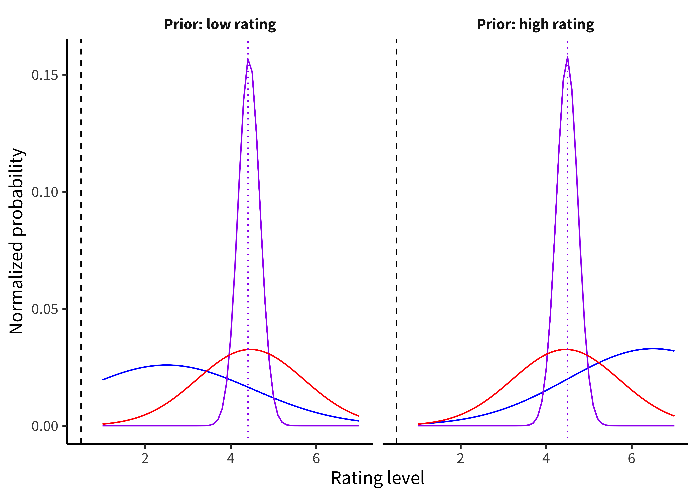

Chapter 5 Estimation

🍎 Learning goals:
- Contrast inference and estimation as two goals of statistical analysis
- Discuss differences between frequentist and Bayesian perspectives
- Reason about standardized effect sizes and their strengths and weaknesses
In the first section of this book, our goal was to set up some of the theoretical ideas that motivate our approach to experimental design and planning. We introduced our key thesis, namely that experiments are about measuring causal effects. We also began to discuss some of our key themes, including precision of measurement, reduction of bias, and generalization across populations. In this next section of the book – treating statistical topics – we will integrate these ideas with an analytic toolkit for estimating effects, quantifying the size and precision of these estimates (this chapter), making inferences about the evidence for such effects (Chapter 6), and making models for estimation and inference in more complex settings (Chapter 7). Although this book is not a statistics text, we hope that these chapters provide some practical foundations for beginning the statistical analysis of your experimental data.
🔬 Case study: The Lady Tasting Tea
The birth of modern statistical inference came from a single, epochal act of mansplaining.54 If you would like a credential helper to help you store the PAT, follow instructions here based on your operation system. Sir Ronald Fisher was apparently at a party when a lady declared that she could tell the difference between cups when the tea was added to the milk vs. the milk to the tea. Rather than taking her at her word, Fisher devised an experimental and data analysis procedure to test her claim.55 There will be lots of files that are simple text files, with .md, .rmd etc. as filetypes. You can open all these with a text editor. Although your computer comes with a default one (e.g. Notepad, TextEdit), we would recommend downloading Sublime Text, which is free and has a lot of powerful tools that will be helpful in the future.
The basic schema of the experiment was that the lady would have to judge a set of new cups of tea and sort them into milk-first vs. tea-first sets. Her data would then be analyzed to determine whether her level of correct choice exceeded that expected by chance. While this process now sounds like a quotidian experiment that might be done on a cooking reality show, it seems unremarkable only because it literally established the way science was done for the next century.
One important and unusual element of the experiment was its treatment of design confounds such as pouring order or cup material. Prior experimental practice would have been to try to equate all of the cups as closely as possible, decreasing the influence of confounders. Fisher recognized that this strategy was insufficient. Random assignment was critical for making strong causal inferences about the treatment (milk then tea vs. tea then milk). We discussed the causal power of random assignment in Chapter 1 – this experiment is a key touchstone in the popularization of randomized experiments!56 For future reference (feel free to ignore this!): you can add just part of the file by using git add -p README.md and following the instructions at the bottom of the terminal window.
5.1 Estimating a quantity
If experiments are about estimating effects, how do we actually use our experimental data to make these estimates? With apologies to Fisher, for our example we’ll design a slightly more modern version of his experiment using a Likert scale (1–7 ratings) and a between-participants design (so each participant gets only one cup of tea). Each of these elements will be discussed in more detail in future chapters.
Our causal theory is that the tea quality is affected by milk ordering, so we’ll test that by rating tea quality both milk-first and tea-first. We’ll do this as a field trial in an English tea cafe: when people order tea with milk, we’ll randomly present it milk-first or tea-first and then elicit a rating on a Likert scale from 1 (terrible) to 7 (delicious). We’ll do this for 48 customers and then take a look at the data.57 We’ll be using R and RStudio in the future. If you do not yet have those downloaded, you can open up a text editor and do the same thing.
Eventually, we’ll want to estimate the effect of milk-first preparation on quality ratings (our effect of interest). But for now, our goal will be to estimate the quality of the tea when it is milk-first [the better way, according to some data; Kennedy (2003)]. More formally, we want to use our sample of 24 milk-first tea judgments to estimate a population parameter that we can’t directly observe, namely the true perceived quality of all possible milk-first cups.
We’ll try to go easy on notation but some amount will make things clearer. We will use \(\theta\) (“theta”) to denote the parameter we want to estimate (the population parameter or “estimand,” though we will try not to say that word too much) and \(\widehat{\theta}\), its sample estimate.58 Statisticians use “hats” like this to denote sample estimates. One way to remember this is that the “person in the hat” is wearing a hat to dress up as the actual quantity. Feel free to ignore this mnemonic; it helps us.
5.1.1 Maximum likelihood estimation
OK, you are probably saying, if we we want our estimate of milk-first quality, shouldn’t we just take the average rating across the 24 cups of milk-first tea? The answer is yes. But let’s unpack that choice: taking the sample mean as our estimate \(\widehat{\theta}\) is an example of an estimation approach called maximum likelihood estimation. In general terms, maximum likelihood estimation is a two-step process.
First, we assume a model for how the data were generated. This model is specified in terms of certain population parameters. In our example, the “model” is as simple as they come: we just assume there is some average level of tea quality and that the measurements vary around it.
Second, we try to find the values of the population parameters that make our observed data as likely as possible. For example, if our sample mean is \(\widehat{\theta_{milk first}} = 4.5\), what underlying value of \(\theta_{milk first}\) would make these data most likely to occur? Well, suppose the underlying parameter were \(\theta_{milk first}=2.5\). Then it would be pretty unlikely that our sample mean would be so much bigger. So \(\theta_{milk first}=2.5\) is a poor guess for the population parameter based on these data. Conversely, if the parameter were \(\theta_{milk first}=6.5\), it would be a bit unlikely that our sample mean would be so much smaller. The value of \(\theta_{milk first}\) that makes these data most likely is just 4.5 itself: the sample mean! That is why the sample mean in this case is the maximum likelihood estimate.
5.1.2 Estimating variation in ratings
Let’s visualize our 24 milk-first tea ratings. Since ratings on our scale are discrete, Figure 5.1 shows them as a histogram. Our estimate of the mean, \(\widehat{\theta_{milk first}}\), is shown as a blue dashed line.
Figure 5.1: Ratings of the quality of milk-first tea, with the best fitting normal distribution shown in blue (mean shown by the dashed line).
Our observations are clustered around the mean, but they also show some variation. Some are higher and some are lower. Variation of this type is a feature of every data set. This variation can be summarized via a probability distribution, a mathematical entity that describes the properties of possible datasets. The only probability distribution we’ll discuss here is the ubiquitous normal distribution (also sometimes called a “Gaussian distribution”). A normal distribution has two parameters, a mean and a standard deviation. These two parameters define the shape of the curve. The mean describes where its center goes, and the standard deviation describes how wide it is.
The blue curve shown in Figure 5.1 is the normal distribution that is closest to the data in our milk-first condition. Its mean is of course \(\widehat{\theta_{milk first}}\), the parameter we just estimated. But to plot this curve, we also had to estimate the standard deviation. It turns out that the standard deviation is just exactly what its name says: the average deviation between the mean and any given observation. We won’t discuss how to estimate the standard deviation for your sample here; you can do this computation easily in any software package. What’s important for now is just that the standard deviation gives us a way to describe the width of the normal distribution.
5.1.3 Bayesian estimation
The maximum likelihood estimation example above describes a common approach to estimating values, where the researcher completely puts aside their prior expectations about what these values might be. Often this approach makes sense, especially when we have no prior expectations about the values we are estimating. But sometimes we do have relevant beliefs about the value. For example, before we perform our tea experiment, we don’t know exactly what \(\theta\) will be, but it seems a bit unlikely that tea would be consistently rated as either horrible (1) or perfect (7). We have what you might call weak prior expectations about the kinds of ratings we’ll receive.
These kind of expectations are most useful when we have a very small amount of data. For example, if our very first participant in the experiment rated their tea as terrible, we wouldn’t want to jump to the conclusion that the tea was actually bad. Instead, we might speculate that the participant was having a bad day or just brushed their teeth. On the other hand, if all of our participants gave bad ratings to their tea, the data would be more persuasive; in that case, we might want to tell the cafe that they are serving substandard tea. With a little data, our prior expectations should moderate our conclusions; as we get more, we should put greater weight on the data.
How do we quantify this tradeoff between our prior expectations and our current observations? We can do this via Bayesian estimation of \(\theta_{milkfirst}\). Bayesian estimation provides a principled framework for integrating prior beliefs and data. These estimation techniques can be very helpful in cases where data are sparse or prior beliefs are strong.
In Bayesian estimation, we observe some data \(d\), consisting of the set of correct and incorrect responses in the experiment. Now we can use Bayes’ rule, a tool from basic probability theory, to estimate this number. Bayes’ rule says:
\[ \color{purple}{p(\theta | d)} = \frac{\color{red}{p(d | \theta )} \color{blue}{p(\theta )}}{\color{black}{p(d)}}. \]
Each part of this equation has a name, and it’s worth becoming familiar with them. The thing we want to compute (\(p(\theta |d)\)) is called the posterior probability – it tell us what we should believe about the population parameter on tea quality, given the data we observed.59 A confidence interval and \(p\)-value for the random-effects estimate \(\widehat{\mu}\) can be obtained using standard theory for maximum likelihood estimates with an additional adjustment that helps account for uncertainty in estimating \(\tau\) (Knapp & Hartung, 2003).
The first part of the numerator is \(p(d|h)\), the probability of the data we observed given our hypothesis about the participant’s ability. This part is called the likelihood.60 The estimate of \(\widehat{\tau}^2\) is a bit more complicated, but is essentially a weighted average of studies’ residuals, \(\widehat{\theta_i} - \widehat{\mu}\), while subtracting away variation due to statistical error, \(\widehat{\sigma}^2_i\) (Brockwell & Gordon, 2001; DerSimonian & Laird, 1986). This term tells us about the relationship between our hypothesis and the data we observed – so if we think the tea is of high quality (say \(\theta = 6.5\)) then the probability of a bunch of low accuracy observations will be fairly low.
The second term in the numerator, \(p(\theta )\), is called the prior. This term encodes our beliefs about the likely distribution of tea quality. Intuitively, if we think that the tea is likely of high quality, we should require more evidence to convince us that it’s bad. In contrast, if we think it’s probably bad, a few examples of low ratings might serve to convince us.
Figure 5.2: Examples of Bayesian inference about tea ratings under two different priors (facets) and just a little bit of data. Blue lines give the prior probability distribution, red lines give the likelihood of the data, and purple lines give the posterior distribution from combining likelihood and prior.

Figure 5.2 gives an example of the combination of prior and data. In this example, we look at what difference the prior makes after observing 3 ratings. If we go in assuming that the tea is likely to be bad, we are biased downward in our highest posterior probability estimate of 4.7; if we go in assuming good discrimination, we end up biased upwards to 5.2.
Figure 5.3: Bayesian inference about tea ratings under two different priors with the full dataset.
Contrast that figure with Figure 5.3, which runs the same Bayesian estimation but with the full dataset of 24 observations. Now the posterior distribution is much more peaked. The prior also makes much less difference to our highest-probability estimates. With the low prior, our estimate is 4.4; with the high prior it is 4.5 also!
Bayesian estimation is most important when you have strong beliefs and not a lot of data. That can be a case where you have just a few participants in your experiment, but it’s also good – and perhaps more common – to use Bayesian methods when you have a lot of data, but maybe not that much data about particular units that you care about. For example, you might have a large dataset about the effects of an educational intervention but not that much data about how it affects a particular subgroup. In general, though, Bayesian estimates and maximum likelihood estimates will exactly coincide either under a flat prior or as you get infinite data.
5.2 Estimating and comparing effects
We’ve now covered estimating a single parameter (the mean in just the milk-first group) using both frequentist and Bayesian methods. But recall that what we really wanted to do was to estimate the causal effect we were interested in, namely the milk-first vs. tea-first effect.61 This method doesn’t have to be used only with a causal effect, it can be any between-group difference. Currently this effect just happens to be causal because our experiment uses random assignment. In this section, we’ll discuss how to estimate the effect, and then how to use effect size measures to compare effects across experiments (as well as some of the pros and cons of doing so).
5.2.1 Estimating the treatment effect
Let’s refer to the causal effect we care about as our treatment effect, called. In practice, estimating \(\Delta\) is going to be a pretty straightforward extension to what we did before.
In the maximum likelihood framework, we could posit that ratings in each group (milk-first and tea-first) follow a normal distribution, but that these normal distributions might have different means and standard deviations. Extending the notation introduced above, let’s term the parameters for the tea-first group \(\theta_{teafirst}\) and \(\sigma_{teafirst}\). To estimate the treatment effect, we are positing a model in which the milk-first ratings are normally distributed with mean \(\theta_{milkfirst} = \theta_{teafirst} + \Delta\) and with standard deviation \(\sigma_{milkfirst}\).
As in the one-sample case (i.e., estimating the mean of just the milk-first group), maximum likelihood estimation would then proceed by finding the value of \(\Delta\) that makes the data most likely under the assumed model. As you’d probably expect, this estimate \(\widehat{\Delta}\) turns out to be simply the difference in sample means, \(\theta_{milkfirst} - \theta_{teafirst}\).
In the Bayesian framework, we would again specify a prior \(p(\Delta )\) that encodes our prior beliefs about the size and direction of the treatment effect. If we have no prior beliefs at all, then we could specify a flat prior, \(p(\Delta ) \propto 1\). If we believe the treatment effect is likely to favor milk-first pouring (\(\Delta>0\)), we could specify a normal prior centered at some positive value (e.g., \(\Delta=0.5\)); the standard deviation of this prior would encode how certain we are about our prior beliefs. And if we have no prior beliefs about the direction of the treatment effect, but we think it is unlikely to be very large, we could specify a normal prior centered at 0, which has the effect of “shrinking” the estimates closer to 0.62 The measures of variability that we discuss here account for statistical uncertainty reflecting the fact that we have only a finite sample size. If the sample size were infinite, there would be no uncertainty of this kind. Of course, this is only one kind of uncertainty! A more holistic view of the overall credibility of an estimate should also account for other things outside of the model, like study design issues and bias.
As in our example above, maximum likelihood estimates and Bayesian estimates are going to be pretty similar if we have a lot of data. They will only diverge when we have strong priors or relatively little data. The reason we are setting up these two different frameworks, however, is that they will provide very different inferential tools in the next chapter.
5.2.2 Measures of effect size
Once we have measured something, we need to make a decision about how to describe this effect to the world. Sometimes we are working with fairly intuitive relationships that are easy to describe. A researcher might say, for example, that people who received milk-first tea drank the tea, on average, 5 minutes quicker than people who received tea-first tea (i.e., that \(\widehat{\Delta}_{time} = 5\)). Time is measured in units like minutes and seconds and so we all have a shared understanding of what 5 minutes means.
But what about our participants’ ratings of tea quality, which were provided on an arbitrary 7-point rating scale that we devised? What does it mean to that participants who drank milk-first tea rated it 1 point higher than participants who drank tea-first tea (i.e., that \(\widehat{\Delta}_{rating} = 1\))? And how is this difference comparable to, for instance, a 1-point change on a scale that has similar anchors (“terrible” and “delicious”) but uses a 100-point rating system?
To provide a common language for describing these relationships, some researchers use standardized effect sizes. A common standardized effect size is Cohen’s d, which provides a standardized estimate of the difference between two means. There are many different ways to calculate Cohen’s d (Lakens, 2013), but all approaches are usually some variant of the following formula:
\[d = \frac{\theta_1 - \theta_2}{\sigma_{pooled}}\]
where the difference between means (\(\theta_1\) and \(\theta_2\)) is divided by the pooled standard deviation \(\sigma_{pooled}\).63 We’re dropping the hats here because we’re now working with a whole bunch of estimates, so everything would have a hat! Intuitively, what you’re doing is taking the study effect (\(\Delta\)) and dividing it – scaling it – by the variation we saw between individuals in the study.
Let’s compute this measure for our tea-drinking study. We can just plug in the estimates we made earlier in the chapter and compute the standard deviation of our observed data:
\[{d} = \frac{\theta_1 - \theta_2}{\sigma_{pooled}} = \frac{4.5- 3.5}{1.25} = \frac{1}{1.25} = 0.80\] In other words, the effect size of the difference between the two conditions is .8 standard deviations.
We previously said that people who drank milk-first tea had quality ratings that were, on average, 1 point higher on a 7-point scale (\(\widehat{\Delta} = 1\)). Cohen’s d translates the arbitrary units of our rating scale into a unit-less effect size that is measured in terms of the variation in the data. You may find yourself wondering: “why would I ever describe things in terms of standard deviations?” The key benefit is that it allows us to compare the size of the effect to studies that use different measures.
Let’s say that we ran a replication of our tea study with two changes: (1) we studied patrons in a US cafe instead of a UK cafe, and (2) we used a 100-point quality rating scale instead of a 7-point scale. Imagine that, just as we found that participants in the UK rated the milk-first tea 1-point higher on a 7-point quality scale, US participants rated the milk-first tea 1-point higher on a 100-point quality scale. It seems clear that these effects are different because of the difference in scale. But how different?
It might at first seem reasonable just to normalize by the length of the scale. So maybe the UK experimental participants showed a 1/7 rating effect and the US participants showed a 1/100 rating effect. The trouble with this move is that it presupposes that participants from two different populations are using two different scales in exactly the same way! For example, maybe US participants made very clumpy judgments that were mostly centered around 50 (perhaps because of a lack of milk tea experience). Standardized effect sizes get around this kind of issue by scaling according to the variability of the data.
Let’s compute the effect size for the cross-cultural replication. We’ll imagine that participants who drank milk-first tea gave an average rating of 50/100 and participants who drank tea-first tea rated it 49 on average. But if their variability was also relatively lower, perhaps the standard deviation of their ratings was only 5. Using the formula above, we find
\[{d_{US}} = \frac{\theta_1 - \theta_2}{\sigma_{pooled}} = \frac{50 - 49}{5} = \frac{1}{5}= 0.2\]
A Cohen’s d of .2 means that US cafe patrons rated their tea .2 standard deviations higher when it was milk-first, much smaller than the .8 standard deviation difference in the UK patrons.
There are no hard and fast rules for interpreting what makes a big effect or a small effect, but people often refer back to standard suggested by Cohen (1992). On those standards, \(d = 0.8\) is a “large effect,” and \(d = 0.2\) is a “small effect.” But these effect size interpretation norms are somewhat arbitrary. More broadly, though US and UK patrons had the same raw score change in quality ratings (\(\widehat{\Delta} = 1\)), standardizing the differences allowed us to communicate that the difference was much larger among the UK patrons.
Cohen’s d is one of many standardized effect sizes that researchers can use. Just as Cohen’s d standardizes differences in group means, there are also ways of standardizing relationships between categorical variables (e.g., odds ratio), how well a predictor variable explains an outcome variable (e.g., Pearson’s r, \(r^2\), or \(\eta^2\)), and more. We’ll be using effect sizes throughout the book, but in most cases – for example, sample size planning in Chapter 10 and meta-analysis in Chapter 18 – we’ll be using Cohen’s d as our example.64 If you’d like to learn more about other varieties of effect size, take a look at Fritz et al. (2012).
5.2.3 Pros and cons of standardizing effect sizes
By now, you’re probably realizing that there are some pros and cons of standardizing effect sizes. Sure, it helps communicate that a 1-point change on a 7-point scale is not the same as a 1-point change on a 100-point scale. But is it any better to say that the first change represents a 0.80 standard deviation difference and the second a 0.08 standard deviation difference?
Proponents of effect size standardization argue that effect sizes allow us to compare results across studies more easily. Across studies, researchers use different measures, different study designs, and different populations. Standardization allows us to use a common language to describe estimated relationships in these varied contexts. This is helpful when we want to aggregate and compare effects across studies via meta-analysis. And it is also helpful when planning new studies. When trying to figure out how many participants to run in a study, almost all techniques use standardized effect sizes to determine how much data would be needed to reliably detect an effect.
Standardizing effect sizes, though, has limitations. For example, if two interventions produce the same absolute change in the same outcome measure, but are studied in different populations in which the variability on the outcome differs substantially, the interventions would produce different standardized mean differences.
For example, imagine we conducted our tea experiment again, but this time with (decaf) tea, and focusing on children. Maybe milk-first tea tastes the same amount better than tea-first tea for kids and for adults. But it’s pretty well known that kids are more variable in their responding. This higher level of variability would lead us to observe a smaller effect size in kids vs. adults. Recall that our UK adult SD was 1.25, and our effect size was \(d = .8\). Imagine that children’s SD is 2.5. In this scenario, even if tea led to the same 1-point absolute change in feelings of excitement among adults and children, the standardized effect size for kids would look half as big:
\[{d_{kids}} = \frac{\theta_1 - \theta_2}{\sigma_{pooled}} = \frac{5- 4}{2.5} = \frac{1}{2.5} = .4\]
This example highlights some of the challenges with standardization. If we focused on the fact that both adults and children experienced a 1-point change in excitement levels (\(\widehat{\Delta} = 1\)), we would conclude that milk-first tea is equally tasty for adults and kids If we focused on the standardized effect sizes, however, we would conclude that the effect of tea is twice as big for adults.
So which is better: describing raw measures or standardized effect sizes? In general our response is “Why not both?” But if you wanted to pick one or the other, we recommend focusing on raw scores when working with measures that yield measurements that are likely to be comparable across studies already. If your study uses standard units such as milliseconds (e.g., for reaction times) or counts (e.g., for a study tracking an outcome like utterances), these measurements are already comparable across studies. Reporting raw measurements can allow you to check whether your measurements make sense – for example, a reaction time of 70 milliseconds is inhumanly fast, while a reaction time of 10 seconds might be extremely slow (at least, for many speeded tasks).
In contrast, we recommend using standardized effect sizes for cases where the measurement is relatively unlikely to be comparable with other studies in its original form, or unlikely to be meaningful on its own. For example, reporting the effect of an intervention on raw math test scores is only meaningful if the reader knows how many items are on the test, how difficult it is, and so forth. In such a case where there it is hard to be “calibrated” to the measurement, standardization with respect to variability via effect sizes may be the best we can do.
5.3 Summary: Estimation
In this chapter, we introduced the idea of estimating both individual measurements and treatment effects from observed data. These ideas are simple but they lay the foundations for drawing inferences, where we move from estimates within a particular sample to inferences about the population. Further, we set up the distinction between Bayesian and frequentist approaches, which we will expand in the next chapter since these traditions provide different inferential tools.